灑花！我家也有烘毛機嘍！
話說小捧油乖巧又有家教就得人疼～
但我媽寵愛摩卡卡日益俱增的程度快到我有點錯愕！XD
有時候想說出去一下就把卡卡留在家，回來就不見狗影！
又要特地去樓下大喊：偷狗賊！還我狗來！
我媽就會回說：呦！回來嘍！卡卡回家～（裝沒事）
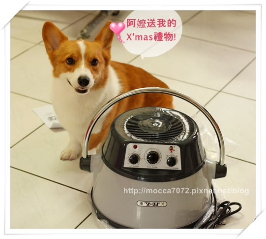
結果上上週的某天我老媽又跑上來說她看到樓下鄰居有一台烘毛機.gif")
說冬天卡卡洗澡會冷，要買給他（冷得是我吧！被他甩的全身水！）
我：媽！泥中樂透歐！？還是撞到頭！？（不當一回事 ）
）
媽：那台很貴嗎？
我：還好啦！！
媽：那就買啊！我贊助～
（咦！沒在開玩笑，立刻翻出Ｐ麻家＆醬董家的文章給我媽看ＳＰＡ箱！）
打鐵要趁熱啊！！哈哈哈～就醬又被我凹了烘箱！（得意）
我買的是第二代的機子 YH-808T
現在好像出到第三代了，但新款價錢不可愛！！而且感覺也沒差多少～
匯完款隔天就立刻收到，效率超好！這裡要大大感謝小熊姨的幫忙 
收到的烘毛機真的好大一台啊！
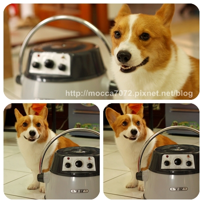
阿卡卡的沐浴時間是一週一次，所以通常假日都會帶他出去玩得夠本夠髒，
這也是為了避免老娘我找到理由不幫他洗澡！哈哈哈.gif")
但也要佩服一下自己，從養卡卡到現在只有3次讓他兩週洗一次澡
其他日子都很乖週週幫寶貝洗香香，.gif")
而且在這之前都用這隻"菲力普"吹風機吹乾他！
看看它被操得有多慘～～邊邊都融掉變形惹.....
（其實是我弟那混小子使用不當造成的.gif") ）
）
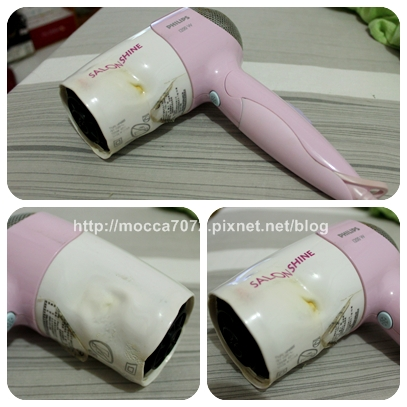
烘毛機內部～紅色一圈就是紅外線功能，
另外這款還可調節溫度、風速，也有定時功能～就醬！
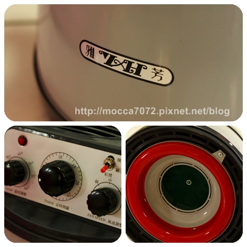
阿嬤都叫它大電鍋！
.gif") 其實它應該是Ｕ佛！？
其實它應該是Ｕ佛！？
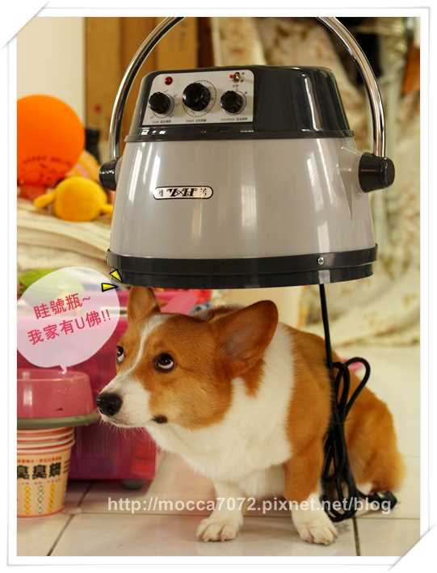
一機多功！還可以電頭毛！？
小客人今年想要燙菲哥捲～～

後頭的小弟服務不佳，小客人有點不耐煩～～～
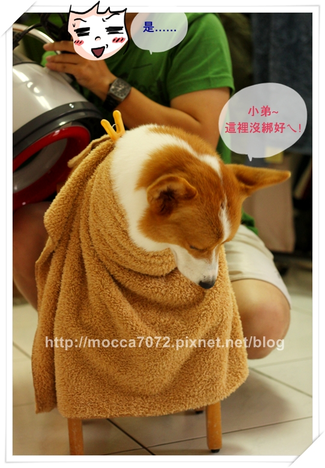
本身是飼料雞的烘頭小弟有點不行惹！
才拍個５０張就開始搖搖晃晃的～.gif") 呿～～
呿～～
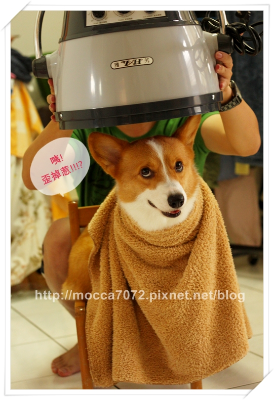
小弟這下真的不舉惹！！哈哈哈～～
忘記量一下這台多重？ 但～應該也還好吧！
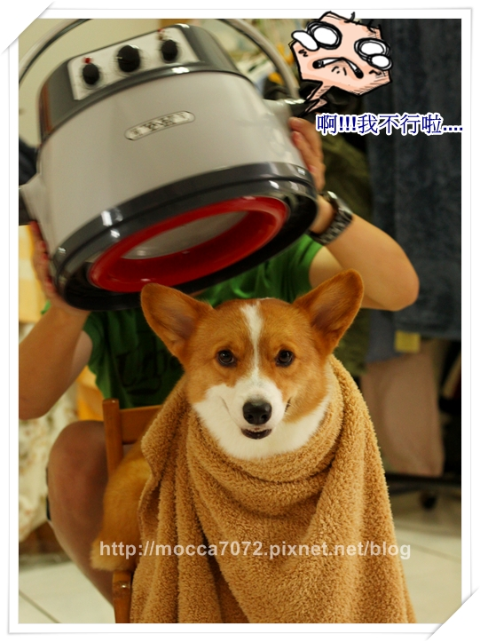
歐屋ｎｏ～失敗！眼睛沒有變大～好可吸歐！
（猛：不要在那誤導消費者！！）
由於摩卡拔的不舉～.gif") ～我們的小客人氣到嘴巴都鼓鼓的惹！
～我們的小客人氣到嘴巴都鼓鼓的惹！
乖～～下次麻麻真的會幫你燙捲捲厚！！
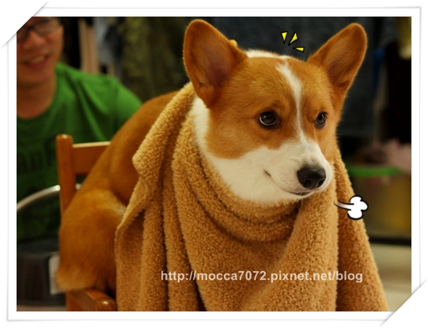
使用前的小對話：
我：喂！來洗狗！你去聞卡卡臭不臭
猛：還好吶！（大吸一口摩卡卡的頭）
我：不是聞那裡，要聞肛門！
猛：.................乾！
呿！拿到手就迫不及待要來試用一下！！管他臭不臭咧～照洗！XD
搬出塵封已久的鐵籠～
嘿嘿～我籠內訓練做的還不錯嘛～～卡卡挺喜歡進籠子的！
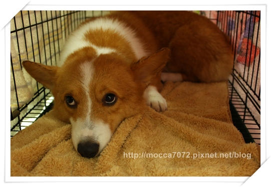
放上電鍋，外面包覆著大大小小的毛巾～～避免ㄌㄠˋ烘！
但弄成醬真的是有夠醜的！哈哈哈.gif")
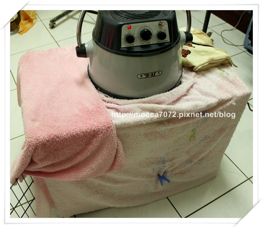
不過這小傢伙不知是太累還怎樣～
一進去就睡了耶～～
新玩意兒到貨你好歹也表現出驚喜的樣子吧！.gif")
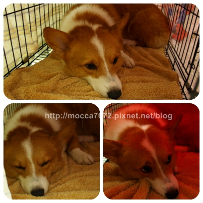
使用心得一個字：讚！
看卡卡表情就知啦！他完全沒有害怕～但也不好奇就是惹！
我想溫溫熱熱的風真的很舒服吧！
其實平常用吹風機吹他也是醬～
不過我怎嘛翻邊，他就是乖乖睡他的！
這小鬼也算很好伺候啦～～
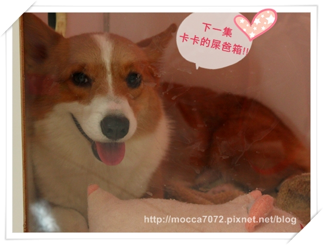
真的是太開心啦！！謝謝我老木～
摩卡卡果然穩坐"金孫"的寶座！
下一篇再給大家看看我用心良苦Ａ到的屎爸箱嘿！！
上面那張就卡卡在ＳＰＡ箱的爽樣！！很可愛吧～～